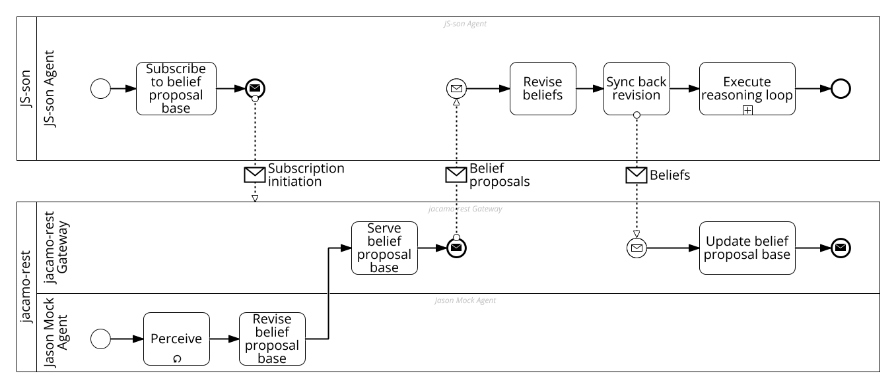

Merging Minds - Distributed Belief Revision in Polyglot Multi-Agent Systems
TBD
TBD
#### Agenda
* Intuition
* Formal Perspective
* Engineering Perspective
* ToDos: Engineering
* ToDos: Formal Work
#### Intuition I
* Distributed multi-agent system
* Example: central JaCaMo MAS, single-agent JS-son clients
* Mind of some agents is distributed (*e.g.*, partly on server, partly on client)
* Main belief base as part of the agent's mind
* Belief proposal base as part of the central MAS
* How to sync the belief bases?
* Engineering and formal belief revision perspectives
#### Formal Perspectives I - Belief Proposal Base
* "Trivial", objective conflict resolution managed centrally
* Given belief base as set $BB$, attacks relations are partial order on $BB \times BB$ (and excluding self-attacks)
* Construct as argumentation framework, resolve with "any" argumentation semantics (*i.e.*, grounded)
Formal Perspectives II - Belief Proposal Base
#### Formal Perspectives III - Belief Base
* Subjective conflict resolution that is up to an individual agent
* Less constraints on attack relations
* Enforce "rationality" (relaxed monotony) properties
Formal Perspectives IV - Belief Base
Formal Perspectives V - Belief Base
Engineering Perspective

#### Engineering ToDos
* Starting point provided [here](./https://github.com/jacamo-lang/jacamo-rest/tree/jacamo-rest-0.6/examples/js-son-integration)
* Improve belief base interface of jacamo-rest
* Allow subscribing to an agent minds in jacamo-rest
* Implement JS-son belief revision support as explicit part of the reasoning-loop
* Implement/update running example
* Implement argumentation-based belief revision capabilities (as part of example)
#### Formal Work ToDos
* Rough intuition exists
* Establish "formal novelty" of work
* Define exact formal models (adjustments of previous theoretical research results)
Questions?
Contact me at tkampik@cs.umu.se
*This work was partially supported by the Wallenberg AI, Autonomous Systems and Software Program (WASP) funded by the Knut and Alice Wallenberg Foundation.*